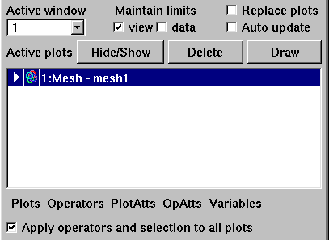

|  |
| Figure 36 |
Data limits that change over time also present a problem when you do investigative work or when you generate a movie. Some plots use the data limits to influence the appearance of the plot. One such plot is the Pseudocolor plot, which maps a variable's data values to a color. If the data range changes over time, the meaning of the colors could change and that is often confusing since it is more intuitive if the meaning attached to each color remains fixed. For example, you might want to adjust the data limits somehow to ensure that the color red always corresponds to the value 50.323. Plots that are affected by the data limits often provide controls for you to specify custom data limits that are used in lieu of the plot's current data limits so the meaning of colors can remain constant throughout the visualization's different time states regardless of how a plot's actual data limits behave. In addition to the data limit controls provided by plots, VisIt's Main Window has a more convenient form for setting the data limits, though you may still prefer to use the plots' data limit controls sometimes. The Main Window provides a Maintain data check box that forces a plot to use the data limits that it had when the Maintain data check box was clicked for all time states in the visualization. If you find that the data limits chosen in this fashion are not suitable for all time states, you can always turn off the Maintain data check box and set the limits explicitly in plot attributes windows.